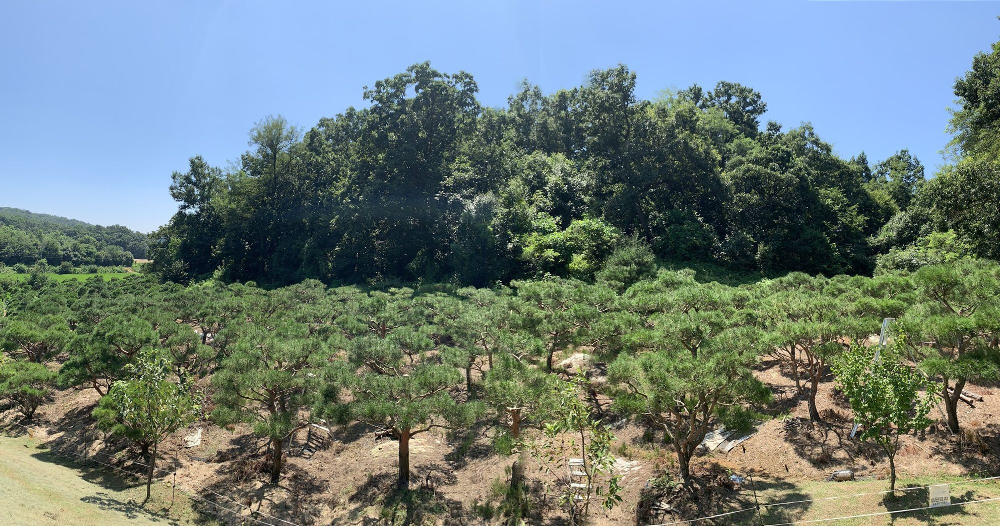
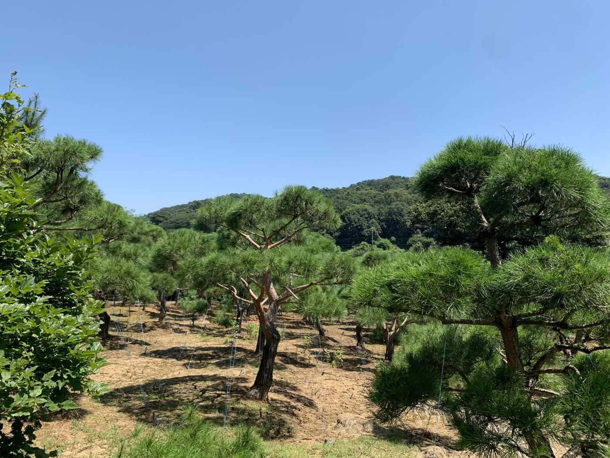
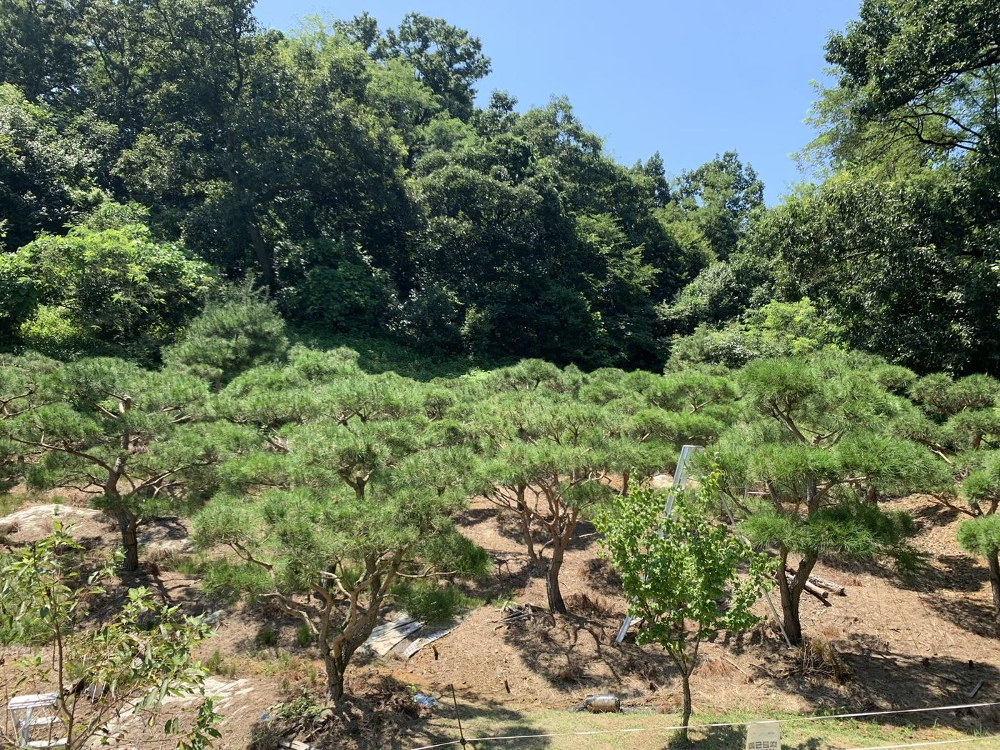

파주 법원리 · 적송 농원
한 그루마다 번호가 있는
소나무밭
30년 넘게 소나무만 길러 온 농원입니다. 나무마다 관리번호와 실측 규격을 붙여 두었습니다. 마음에 드는 나무를 골라 농원에 바로 문의하세요.

지금의 농원 둘러보기법원리농원
한 집안이 30년 넘게 소나무만 길러 온 농원입니다. 사는 사람이 직접 보고 고를 수 있게 한 그루씩 번호를 붙여 실측 규격과 사진을 등록했습니다.
구역, 줄, 자리 순서로 붙은 관리번호 하나가 나무 한 그루입니다. 배치도에서 자리를 확인하고, 나무마다 사진과 실측 규격을 봅니다.
이달의 농원
지금 농원에서 볼 수 있는 것
규격별로 보기
전체 목록
필요한 굵기부터 고르세요
근원직경(R) 기준으로 묶었습니다. 누르면 해당 나무 목록이 열립니다.
구매 과정
농원과 직접 이야기합니다
- 01
나무 고르기
배치도나 목록에서 나무를 고르고 관리번호를 확인합니다. 여러 그루를 한꺼번에 담을 수 있습니다.
- 02
구매 문의
관리번호와 수량, 현장 지역을 남기면 농원 판매 담당이 가격과 출하 일정을 알려드립니다.
- 03
현장 확인과 출하
원하시면 농원에서 나무를 직접 보고 정합니다. 굴취와 운반은 일정에 맞춰 함께 협의합니다.
